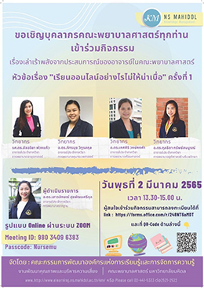

ข่าวกิจกรรม - ข่าวประชาสัมพันธ์
การอบรม เรื่อง “เรียนออนไลน์อย่างไรไม่ให้น่าเบื่อ”

คณะกรรมการพัฒนาองค์กรแห่งการเรียนรู้และการจัดการความรู้ คณะพยาบาลศาสตร์ มหาวิทยาลัยมหิดล จัดการอบรมหัวข้อ “เรียนออนไลน์อย่างไรไม่ให้น่าเบื่อ” ครั้งที่ 1 ในวันพุธ ที่ 2 มีนาคม 2565 ผ่านระบบอิเล็คทรอนิกส์ ซึ่งในการอบรมครั้งนี้ มีอาจารย์จากภาควิชาการพยาบาลสูติศาสตร์-นรีเวชวิทยา คือ อาจารย์ ดร.กุลธิดา ทรัพย์สมบูรณ์ ได้รับเกียรติเป็นวิทยากรในการบรรยายการจัดการเรียนการสอนของวิชาปฏิบัติการพยาบาลมารดา-ทารกและการผดุงครรภ์ 1 ซึ่งมีรูปแบบการเรียนการสอนโดยใช้สถานการณ์จำลอง (simulation) และเทคนิคการใช้เทคโนโลยีต่างๆมาร่วมสอนแบบออนไลน์ ทำให้ผู้เรียนมีส่วนร่วมในการเรียนการสอนและสร้างความสนใจในการเรียนออนไลน์มากยิ่งขึ้น